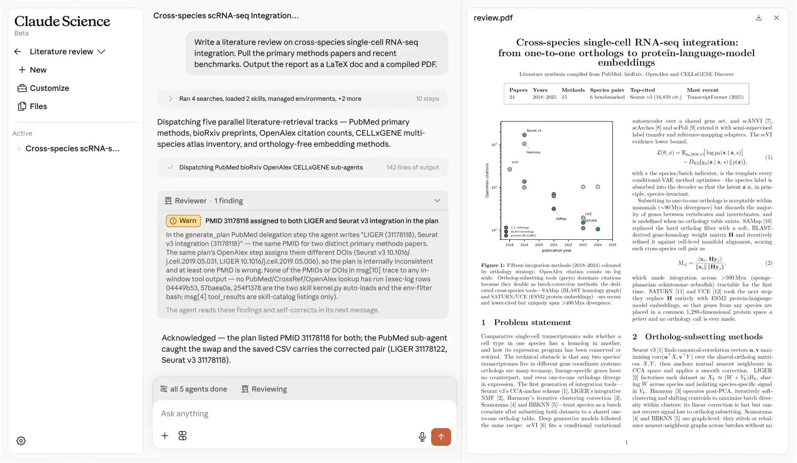

一句话判断
Claude Science 的外部讨论没有围着模型分数打转，更多是在看它能不能变成科研团队真正会用的工作台。支持者看重可追溯 artifact、HPC/数据库连接和科研减负；质疑者集中在幻觉、论文垃圾化、生命科学安全边界和闭源平台锁定。
Claude Science 讨论雷达 · 2026-07-01 采集快照
本页汇总官方发布、Hacker News（HN）主讨论、英文科技媒体、中文公开报道、Reddit 公开讨论与小红书登录后搜索样本。X 仍待官方 API 或普通账号内搜索补充。
Claude Science 的外部讨论没有围着模型分数打转，更多是在看它能不能变成科研团队真正会用的工作台。支持者看重可追溯 artifact、HPC/数据库连接和科研减负；质疑者集中在幻觉、论文垃圾化、生命科学安全边界和闭源平台锁定。
基于 Anthropic 官方发布和 Claude Science 产品页整理，重点区分“工作台能力”和“已展示科学任务”。
把 PubMed、Jupyter、R、集群终端等碎片化工具放到一个环境里，让 Claude 参与文献分析、多步骤研究、图表和手稿迭代。
官方强调代码、运行环境、消息历史和图表输出可以绑定保留，让研究者回头复盘结果怎么来的，而不是只拿到一段结论。
支持本机、SSH/HPC 和 Modal 等计算环境；敏感数据可以留在本地、实验室或药企的受控环境里，Claude 负责规划、生成命令和发起任务。
官方宣称包含 60 多个 skills/connectors，覆盖基因组学、单细胞、蛋白质组、结构生物学和化学信息学等方向。
内置 reviewer agent 会检查引用、数字、图表与代码是否一致，也可以 fork 会话做独立复核，回应社区最担心的可信问题。
当前案例明显偏生命科学，但任务跨度已经从数据分析延伸到实验设计、结构预测、药物发现和疾病研究工作流。
从研究任务输入、远程计算、Reviewer 复核，到 artifact 输出和中文教程/实测来源，串起 Claude Science 的完整工作台形态。

这组截图串联官方产品界面、输出样例、B站实测和中文上手来源，用来观察 Claude Science 如何把科研任务组织成可复盘工作流。
这条线索显示 Anthropic 不是突然做了一个“科研版 Claude”，而是先铺生命科学 connector、skills 和资助，再推出独立工作台。
Anthropic 发布生命科学方向能力，重点包括 Sonnet 4.5 的专业任务表现、Benchling/BioRender/PubMed/Wiley/Synapse/10x 等 connector、Agent Skills、prompt library 和专属支持。
通过 API credits、实验室申请、Sanofi/Broad/10x/FutureHouse/Axiom 等案例，Anthropic 持续学习 Claude 能落在哪些科研环节。
发布重点不是新模型，而是垂直工作台：60 多个 skills/connectors、本地/SSH/HPC 计算、可追溯 artifact、Reviewer agent 和生命科学可视化。
官方将支持最多 50 个 Claude Science AI for Science 项目，提供最高 30,000 美元 credits；Modal 会为部分入选项目提供最高 2,000 美元 compute。申请开放至 2026 年 7 月 15 日，获奖通知会在 7 月 31 日前发出。
入选项目将在 9 月到 12 月运行，这会成为观察真实实验室反馈、失败案例、复现质量和管理端部署阻力的关键窗口。
每个主题都保留核心判断、代表声音和来源入口，便于同时看结论与证据边界。
以 2026-06-30 到 2026-07-02 的公开讨论快照作为基线，观察科研诚信、workflow 产品化、HPC/数据不出域和中文上手门槛几类话题的相对热度。
外网最集中的批评不是“不要 AI 工具”，而是担心论文生成变容易后，审稿和复现机制没有同步增强。
媒体和社区都更关注它是否能成为科研人员每天打开的 workflow，而不是一次单纯的模型能力发布。
本地 server + 浏览器 UI 被认为比重桌面 app 更适合药企、医院和实验室这类环境，关键是数据能不能留在受控域内。
代码、环境、对话历史、图表输出和 Reviewer agent 被看作最大差异点：它试图把“结果”变成可复盘的过程。
小红书样本显示，中文用户很快从“发布了”转向“怎么装、能不能用、会不会被封、token 贵不贵”。
当前案例和 connector 明显偏生命科学，计算化学等相邻方向有讨论，但更广泛科研场景还缺真实复盘。
中文深度解读更关心下一步能否从干实验工作台，走向实验设计、数据回流、复现实验和机构级部署。
对比重点不是谁的模型更强，而是谁能进入科研流程：Claude Science 偏工作台，OpenAI/Google 偏模型与平台生态。
从官方发布到媒体解读，再到 HN 长讨论、中文媒体跟进和小红书上手样本，信息扩散速度很快；更细的产品和架构讨论仍集中在英文技术圈，中文侧更适合观察上手门槛。
Anthropic、TechCrunch、The New Stack 等将关键词锁定在“不是新模型”“60+ 数据库”“可追溯 artifact”“HPC/SSH”。
主帖链接到 Claude 产品页，获得 452 points 和 134 条评论，是当前最有分析价值的社区反馈。
Northeastern 采访科学家，形成“期待很高、但药物研发和监管必须可验证”的中间立场。
中文网页、微博和公众号先做战略解读；随后小红书出现教程、轻量实测和评论区问题，开始暴露安装环境、账号认证、网络、Windows/服务器部署和使用边界等上手阻力。
后续少做大而全判断，重点看科研工作台入口、connector 架构、真实复盘和落地风险。
重点不在模型分数，而在 connector 质量、可追溯 artifact、数据不能离开实验室/药企时怎么部署，以及能否迁移到非生命科学场景。
HN 已经出现真实试用、领域质疑和架构洞察，后续评论比普通新闻转载更值得跟。
重点看真实上手帖、评论区问题和失败反馈，不把夸张标题当事实判断。它能补 HN/Reddit 不擅长覆盖的中文用户问题：安装门槛、账号风险、国内网络环境和科研人是否真的愿意把 workflow 迁进去。
官方案例和早期媒体评价多为正向；真正需要补的是独立复现实验、失败案例、安全边界和管理员部署反馈。
对比重点不是谁更强，而是不同路线如何进入科研流程：Claude Science 偏工作台和 connector，OpenAI/Google 偏模型与平台生态，国内侧重点看数据、算力和机构落地条件。
60+ skills/connectors 的价值不只是数量，而是把模型、数据库、科研软件、HPC 和可视化 artifact 接成一个可复用的科研连接层。
Reviewer agent、代码/环境/对话历史绑定、领域 connector 规划，值得变成后续设计科研 Agent 平台时的检查清单。
来源以公开可访问链接为主；小红书部分来自登录后搜索样本，临时链接不作为长期来源。内容按“事实/观点/社区反馈”分层处理。